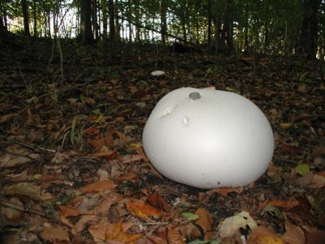
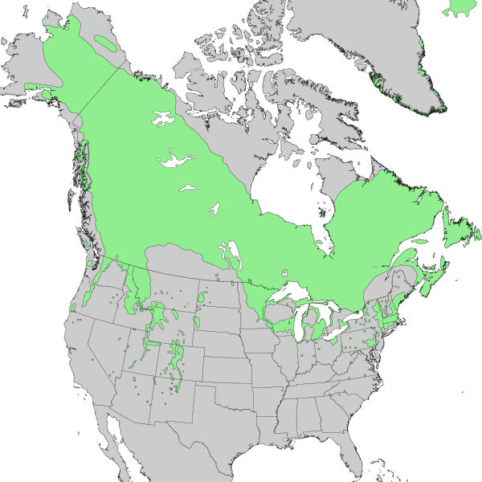

Intro to population ecology
NRES 470/670
Spring 2022

Central Questions of Population Ecology
Ecological
- Why are some species more abundant than others?
- What causes population densities to vary in space and time?
- What causes populations to become extirpated? Recolonized?
- What processes regulate population growth?
- Extrinsic vs intrinsic factors (Nicholson vs Andrewartha debate)
- What prevents predator-prey relationships from collapsing?
- What factors allow competitors to coexist?
- What factors allow metapopulations to be stable and self-sustaining?

Conservation and Management
- What is the conservation status of a focal species or population?
- How do anthropogenic structures and land uses affect populations?
- What is the Maximum Sustainable Yield for a focal game species?
- How can pest species be effectively controlled?
- What specific land areas should be protected to preserve at-risk populations and metapopulations?
- What are the likely population-level effects of alternative conservation or management strategies?
What is a population?
From Krebs (1972): “A population is defined as a group of organisms of the same species occupying a particular space at a particular time, with the potential to breed with each other’
Spatial boundaries defining populations sometimes are easily defined, but more typically are vague and difficult to determine.
Population size, or abundance, is often represented as \(N\), and is the most basic measurement of a wild population.
Exponential growth: the fundamental principle of population ecology

Giant puffballs produce 7 trillion offspring (12 zeroes!) in one reproductive event … If all of those individuals reached adulthood, the descendants from just two parent puffballs would weigh more than the entire planet in two generations!
The reason? Populations can exhibit exponential growth, in which each new addition to the population expands the reproductive potential of the population in a positive feedback loop.
Mathematics and Population Ecology
‘Mathematics seems to endow one with a new sense’
- Charles Darwin
‘Like most mathematicians, he takes the hopeful biologist to the edge of the pond, points out that a good swim will help his work, and then pushes him in and leaves him to drown’
- Charles Elton, in reference to a work by Alfred Lotka

The importance of the method is this: if we know certain variables, mostly desired by ecologists and in some cases already determined by them, we can predict certain results which would not normally be predictable or even expected by ecologists. The stage of verification of these mathematical predictions has hardly begun; but their importance cannot be under-estimated, and we look forward to seeing the further volumes of Lotka’s studies.
- Charles Elton
Population ecology is central to many of the most pressing questions in modern ecology and evolution
This class is mostly about how important Population Ecology is to wildlife conservation and management. But it is worth mentioning that Population Ecology is a very active field of basic science, and that population ecology is at the core of many of the central questions of ecology and evolution.
These questions are from Sutherland et al. 2012. This paper is on WebCampus (optional). Of course there are many more interesting questions- limited only by your imagination.
You may not understand all these questions now- we will revisit this list at the end of the semester!

- What are the ecological consequences of species becoming less connected through fragmentation or more connected through globalization?

What are the ecological mechanisms that govern species’ range margins? (figure is for common juniper)
How do patterns at the population scale (e.g., density-dependence) relate to processes at the level of individuals (e.g., behavioral interactions)? (emergent properties!)

- What is the relative importance of direct (predation, contest competition) vs. indirect (induced behavioral change; e.g., fear) interactions in determining the effects of one species on others?

What demographic traits determine the resilience of natural populations to disturbance and perturbation (e.g., climate change)?
To what extent will climate change de-couple trophic links due to phenological mismatches?
How do natural populations and communities respond to increased frequencies of extreme weather events predicted under global climate change?
How do interspecific interactions affect species responses to global change?
How important are rare species in the functioning of ecological communities?
And many more…

In-class Exercise: positive feedbacks
Feedbacks in systems occur when the input and output rates (e.g., births and deaths per year) depend upon the value of the stock (e.g., a wild population!).
Feedbacks are what leads to complex (‘interesting’) system behaviors and unexpected emergent properties.
A reinforcing, or positive feedback (often called a ‘vicious circle’) leads to exponential growth, leading to insanely high numbers given enough time!
A negative feedback is stabilizing, leading to nice, orderly, regulated systems (and homeostasis in organismal biology!). We’ll talk more about negative feedbacks in populations soon enough (population regulation).
In the previous in-class exercise the model structure produced linear growth as the [Flow] added a fixed amount to the [Stock] in each time step.
Q: What do the following have in common: snowball, people, rabbits, fire, bacteria, fleas, savings accounts, cancer?
Let’s build a model to help us better understand this process.
This model adds a feedback using a [Link] from the [Stock] back into the [Flow]. The [Link] communicates the value of the [Stock] to the [Flow]. A [Link] only communicates information from one element of the model to another, it doesn’t actually change the value of the [Stock] (that is what a [Flow] does).
Open InsightMaker. Create a [Stock] and a [Flow] as you did in the previous model (flow should be an input, not an output) and just name them Stock and Flow for now.
If you mouse over Stock or Flow a small [\(=\) Sign] will appear. If you click this it will open the Equation window where you can set values or equations. Open this window for the [Stock], enter a value of 1, then close the window.
The value of the [Stock] can be communicated to the [Flow] with a [Link] (representing a feedback process!). To create a [Link], click Link in the Connections part of the toolbar (at the top). When you mouse over the [Stock] click on the blue arrow, drag the [Link] to the [Flow] and release. You now have a [Link] on top of the [Flow]. Now hold the Shift Key and click in the middle of the [Link] and a little green node will be created on the [Link]. You can select this node and drag it up so the [Link] isn’t directly on top of the [Flow] (now you can see the [Link]).
Usually there is some type of factor governing the rate the [Stock] influences the [Flow]. Let’s introduce a [Variable] named Rate. To create a [Variable], right-click on the canvas and select Variable from the drop-down. Now draw a [Link] from Rate to the [Flow]. Open the Equation window for Rate and set it to 0.5.
Open the Equation window for the [Flow] and set it to [Stock] times [Rate]. That is, the total inflow into the [Stock] is equal to the value of the [Stock] multiplied by the value of Rate.
Now click [Run Simulation] and you have just finished your first reinforcing loop simulation model! Does it do what you would expect?
Q: If [Stock] is a population – say, rabbits – then what is the interpretation of [Flow]? What is the interpretation of Rate? Rename your variables accordingly and change the parameters to make the model more biologically realistic. Run the simulation again.
Q Recall the basic equation of exponential growth: \(\Delta N = r \cdot N_t\). How does it relate to the InsightMaker model you have just created? Which component of the equation refers to which component of the model in InsightMaker? [TopHat]
- Think about the first question above while doing this (snowball, people, rabbits, fire, bacteria, fleas, savings accounts, cancer). How would you change the values to represent each of these quantities? Pick a couple of these and try it out!
You should notice that the population tends to grow slowly at first and then very rapidly. This is referred to as exponential growth. If you’ve read the first chapter of the Gotelli book, you will recognize this as the foundational concept of population ecology!
Q Can you model the puffball example from earlier in the lecture? How many giant puffballs are in the population after two generations?? [TopHat]
Q Can you (approximately) replicate the human population graph at the beginning of this lecture? What is the per-capita growth rate (\(r\)) of the human population?? [TopHat] (NOTE: this is totally optional, but you could solve this analytically!)
And just for fun, here is a video about exponential growth you might want to check out..